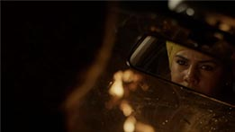
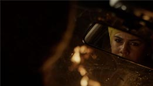

White Bear: Escenas Importantes
Dentro de una serie de episodios impactantes de Black Mirror, puede que White Bear (Oso blanco en su traducción a español) sea uno de los más desafiantes para la audiencia debido a los temas tratados (distintos aspectos de la sociedad contemporánea como la cobertura mediática de asesinatos, los efectos de la tecnología en la empatía de las personas, la desensibilización, la violencia como entretenimiento, la vigilancia, los conceptos de justicia y castigo y la naturaleza de la realidad.) y el misterio y el suspenso que se mantiene a lo largo todo dicho episodio.
Este capítulo cuestiona la sed de justicia por mano propia (o el ojo por ojo) aplicado por el aparato estatal.En este episodio conocemos a Victoria, una mujer que no recuerda quién es y despierta en un lugar desconocido donde las personas son controladas por una señal extraña. Allí conoce algunas personas que no se ven afectadas por la señal y juntos se unen para detener la transmisión, llamada "Oso Blanco", mientras sobrevive a un grupo de perseguidores enmascarados.
Este episodio refleja diversos aspectos de la sociedad contemporánea como la cobertura mediática de asesinatos, los efectos de la tecnología en la empatía de las personas, la desensibilización, la violencia como entretenimiento, la vigilancia, los conceptos de justicia y castigo, entre otros.¡Échale un vistazo a las escenas más importantes del episodio!
 
